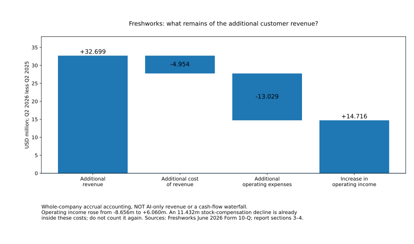

Is AI a Bubble? · Dated investigation · Customer dollar and renewal
Paid persistence is real; the division of the gain is not uniform
What customers keep buying—and what remains after the provider’s full costs.
Updated as new research is ready
Paid persistence strengthens the commercial case
There is better evidence that customers keep buying and that providers can retain part of the gain. The division is not uniform. An application vendor can expand an existing customer base and earn a positive operating result. An advertising platform can use better models to improve the product buyers already pay for, without selling a separate AI subscription. Neither success establishes every AI product's renewal rate, complete cash margin or infrastructure return.
Freshworks supplies the direct-payment case. Its existing customers contributed additional recognized revenue, and the company crossed into quarterly operating profit after its full operating expenses. Meta supplies the embedded-monetization contrast: provider-reported production experiments support a route from improved recommendations to valuable advertising outcomes. These findings strengthen the favorable case for commercial capture—not just the case that people find tools useful. [FQ] [FREL] [LLATTE]
The qualifications change the interpretation, not the existence of the evidence. Freshworks' retention statistic covers the company, not Freddy AI alone; its reported and constant-currency comparisons move in different directions. Its large gross margin leaves a much smaller operating-profit cushion. Positive cash generation is real, but an adjusted cash measure rises while the corresponding unadjusted residual is roughly flat. Meta's successful experiments do not allocate all of the company's revenue, costs or capital spending to the tested model.
The strongest sustainable path is shared gain: customers obtain better or cheaper work, sellers keep enough payment to cover delivery and continuing development, and improvements support repeat buying. Competition need not send all value to one side. The vulnerable path is that growing sales still leave too little after the full expense base, investment and financing claims. Both have concrete support here; the evidence does not assign them universal probabilities.
The whole-pool answer therefore becomes more favorable on persistent commercial activity and possible provider capture, while remaining conditional on full investment recovery and ownership prices. This is not a finding that every provider has a strong margin, nor that a cash-rich customer guarantees a rewarding investment. The current whole answer connects those claims.
This investigation concerns the U.S.-centered commercial generative/frontier-AI build-out, using a mixed software company and an advertising platform to test distinct mechanisms. The company accounts are not AI-only accounts. The cases are deliberately informative, not a representative sample of the industry.
Follow a buyer through the provider—not just a product count
A buyer's willingness to renew depends on the useful work received and the full cost of switching, implementation and continued service. The provider's ability to keep that customer depends on price and quality; its ability to retain cash also depends on the costs behind the service. These are related observations, not interchangeable proxies.
Freshworks' Seagate story provides a named purchase and deployment chain. It describes a replacement at the previous platform's renewal deadline, a three-month implementation, Freddy assistance within Microsoft Teams, lower platform cost and 32% ticket deflection in the first year. Those are attributed claims in an undated vendor/customer story, not an independent invoice audit or a randomized saving estimate. Redeploying employees can be valuable without reducing payroll. A ticket deflected is not automatically a permanently avoided human expense. [SEAGATE]
Seagate is an operating business with disclosed resources: in its fiscal year ended 3 July 2026, operating cash was $3.674 billion and cash property/equipment purchases were $569 million. Their $3.105 billion difference is a bounded resource comparison before other uses, not the identified source of a particular Freshworks payment. Seagate also sells into storage and cloud markets; this example does not establish that the purchaser is insulated from AI investment or trace the ultimate funding of each invoice. [STX]
The useful evidence is stronger than a logo on a sales slide but narrower than a matched renewal ledger. A platform replacement can transfer spending from another software supplier. It need not represent wholly new spending for the economy. Integration and workflow familiarity can help the chosen vendor retain a relationship, but neither establishes its renewal price or an unlimited ability to raise it.
Visual explanation
A real payment chain is not three independent profits
Scroll the figure horizontally to inspect all labels.
Freshworks identifies AWS as its primary hosting provider, while its subprocessor disclosures also identify Azure OpenAI and other service/model relationships. That establishes an upstream delivery chain, not an invoice allocation. An Azure service bill must not be silently relabeled a direct payment to OpenAI. Public disclosure does not identify total Freddy inference cost, every upstream tariff or the precise service mix. [FQ] [FP]
The June-quarter filing attributes approximately $4.6 million of the $4.954 million increase in cost of revenue to hosting. That is an increase, not total hosting expense, an AWS-only payment or the full AI delivery cost. It is nevertheless concrete evidence that additional service has an upstream cost. Purchased infrastructure is already in the application's accounts; adding an assumed complete upstream data-center investment bill again would double-count. Treating the model call as its only cost would omit the rest of the application business. [FQ]
What contract persistence can establish
Freshworks' published terms, effective 1 April 2026 as inspected, provide for noncancelable, nonrefundable in-term commitments with specified exceptions, renewal notice and pricing provisions; an actual order can govern particular terms. Supplemental AI provisions and the ability to disable a feature do not establish that the buyer can eliminate every associated payment immediately. These are published terms, not the negotiated Seagate order or a forecast of enforcement. Remedies and exceptions remain relevant. [FT] [FS]
Contract protection and customer choice work on different dates. An enforceable current term can stabilize revenue while the next renewal is contested. A buyer can switch vendors while continuing to use AI. For the pool's financing question, durable demand for a type of work is not automatically durable cash for one vendor or one upstream capacity contract.
Existing customers contribute more—but measure the right retention
Freshworks' annual-recurring-revenue retention measure compares the same prior-year customer set, including expansion, contraction and churn, with the stated acquisition and currency treatment. It is company-wide ARR retention, not an AI-product renewal rate or collected cash. About 12% of June ARR came from monthly subscriptions annualized for the metric; that convention does not guarantee twelve months of future payments. [FQ]
The currency comparison matters. Reported retention fell from 106% in June 2025 to 104% in June 2026. Constant-currency retention rose from 104% to 105%. Neither pair should be concealed. Calling this an unambiguous currency-adjusted deterioration would reverse the second comparison. December's 108% reported and 104% constant-currency measures concern another rolling date/cohort, not a fixed group tracked unchanged into June. [FQ] [FREL] [FY25]
Visual explanation
The currency-adjusted comparison tells a different story
Scroll the figure horizontally to inspect all labels.
The recognized-revenue bridge supplies another kind of persistence evidence. Management attributed approximately $16.0 million of the quarter's increase to customers present a year earlier, net of contraction and churn, and $16.7 million to new customers. The following reconstruction uses the rounded existing-customer contribution and leaves the new-customer residual visible. It is not an invoice-level cash allocation. [FQ]
| Measure | Q2 2026 against Q2 2025 | H1 2026 against H1 2025 |
|---|---|---|
| Prior-period revenue | 204.678 | 400.951 |
| Reported approximate existing-customer increase | 16.000 | 34.800 |
| Implied existing-customer revenue | 220.678 | 435.751 |
| Reconstructed new-customer contribution | 16.699 | 30.259 |
| Current total revenue | 237.377 | 466.010 |
The reconstructed new-customer amounts differ slightly from management's rounded $16.7 million and $30.3 million descriptions. That is rounding, not a new customer category. The quarter is contained within the half-year: the columns are not added. This evidence establishes an existing-customer contribution to company growth; it does not say every customer renewed, identify the AI share or show what those buyers paid net of every credit.
There is also explicit evidence of paid AI adoption. The August 4 call said more than 7,000 accounts paid for an AI SKU; the earlier full-year release said Freddy exceeded $25 million ARR at December 2025. The different dates, lower bounds and measures cannot be divided into a reliable average realized price. They strengthen the paid-product case without supplying AI-specific net-dollar renewal or margin. [FCALL] [FY25]
Current deferred revenue of $400.469 million and management's $493.3 million expected recognition from remaining performance obligations over the next twelve months are different accounting/contract quantities again. The $280.2 million recognized during the half-year from opening deferred revenue was not a second collection of that cash. Revenue persistence and cash timing must both survive the transition to the provider's accounts. [FQ]
High gross margin, a narrow full-operating-cost cushion
Freshworks' quarter is favorable evidence precisely because the full expense structure can be inspected. Revenue increased by $32.699 million; cost of revenue increased by $4.954 million and operating expenses by $13.029 million. Operating income improved by $14.716 million, from a loss to a profit. The comparison concerns the consolidated business, not Freddy alone. [FQ]
| Reported measure | 2025 | 2026 |
|---|---|---|
| Revenue | 204.678 | 237.377 |
| Cost of revenue | 31.142 | 36.096 |
| Gross profit | 173.536 | 201.281 |
| Research and development | 39.943 | 43.815 |
| Sales and marketing | 95.223 | 106.450 |
| General and administrative | 47.026 | 37.924 |
| Restructuring | 0.000 | 7.032 |
| Total operating expenses | 182.192 | 195.221 |
| Operating income / (loss) | −8.656 | 6.060 |
Observed accounts · calculated bridge
What remains of the additional customer revenue?
Scroll the figure horizontally to inspect all labels.

The 84.8% gross margin is not cash freely available to owners. After operating expenses the quarter's operating margin is 2.55%. Distribution, product development, administration and workforce compensation are not optional omissions from a full-profit claim. Financing, tax, investment and working-capital timing require further treatment before operating profit becomes owner cash.
The stock-compensation change is especially important. Quarterly expense fell from $49.280 million to $37.848 million: $11.432 million, or 77.7% of the operating-income improvement arithmetically. Holding that change out leaves $3.284 million of improvement. That is a diagnostic comparison, not a reported alternative profit figure or a causal estimate. The filing identifies approximately $10.4 million of prior expense primarily for the former executive chairman’s awards; the reduction should not be presented as an AI productivity saving. Nor does a noncash expense make compensation economically free. [FQ]
This qualification does not erase the progress: revenue grew and the application business earned a quarterly operating profit. It limits what can be generalized. The first half still recorded a $2.000 million operating loss, versus $19.072 million a year earlier. A profitable quarter is not a permanent margin assumption, just as a loss-making half is not evidence that the service has no commercial value.
A small, interpretable expense-envelope test
At the quarter's unchanged total costs, $6.060 million less revenue—2.55% of the total—would exhaust operating profit. If delivery costs instead fall proportionately with revenue while operating expenses stay fixed, the zero-profit revenue decline is 3.01%. These are conditional breakpoints around observed costs, not a forecast of churn, a measured demand elasticity or a cash-default threshold.
The existing-customer reconstruction makes the constraint concrete. Total delivery and operating costs were $231.317 million. Holding reconstructed new-customer revenue at $16.699 million requires $214.618 million of existing-customer revenue to cover that cost envelope, compared with the implied $220.678 million. Excluding all new-customer revenue while holding every cost unchanged leaves a $10.639 million gap. That is not the measured profit of the old cohort: public accounts do not allocate all costs between retained and new customers.
The important economic question is therefore not just whether a logo renews. It is how much net revenue persists, how much new business costs to win and serve, and whether those receipts cover the continuing organization. A rise in accounts can coexist with weak capture; a moderate retention ratio can coexist with a profitable business that also wins worthwhile new customers.
Cash generation is real; adjusted cash is a different measure
Freshworks generated positive operating cash across the inspected quarter, half-year and full-year periods. That is favorable evidence beyond a profit forecast. It must still be distinguished from the income statement and from the company's adjusted free-cash-flow presentation.
A transparent unadjusted residual subtracts cash property/equipment and capitalized software from operating cash. It remains a partial cash measure, not a comprehensive return to owners after acquisitions, financing and compensation economics. The published adjusted figure then adds back specified costs that were actually paid. Those addbacks may be useful to explain a company's chosen comparison; they do not put the cash back in its bank account. [FREL]
| Cash measure | Q2 2025 | Q2 2026 | H1 2025 | H1 2026 |
|---|---|---|---|---|
| Operating cash | 58.591 | 58.523 | 116.564 | 120.912 |
| Cash property/equipment | 0.380 | 5.041 | 1.676 | 8.942 |
| Capitalized software cash | 4.676 | 1.471 | 7.448 | 4.850 |
| Unadjusted cash residual | 53.535 | 52.011 | 107.440 | 107.120 |
| Specified paid-cost addbacks | 0.728 | 5.648 | 2.221 | 6.367 |
| Adjusted free cash flow | 54.263 | 57.659 | 109.661 | 113.487 |
Visual explanation
A positive cash business, but not the same growth in every measure
Scroll the figure horizontally to inspect all labels.
The half-year unadjusted residual was roughly flat, not growing with the adjusted measure. This is compatible with real cash generation and improved operating results; it is not a contradiction to conceal. Full-calendar-2025 operating cash less cash property/equipment and capitalized software was $220.879 million. Neither that annual figure nor the interim residual is AI-only cash. [FY25]
Reconcile the working-capital sign from the components
The filing's management discussion describes an approximately $4.1 million working-capital inflow. Its signed cash-statement components instead sum to a $4.059 million outflow:
+14.577 − 21.290 − 10.269 + 15.568 − 5.749 + 9.456 − 6.352 = −4.059.
These are, respectively, receivables, capitalized contract costs, prepaid/other assets, payables, accrued/other liabilities, deferred revenue and lease-liability movements. The component interpretation reconciles the reported half-year operating cash:
−1.571 net income + 126.542 noncash adjustments − 4.059 working capital = 120.912 operating cash.
This is a source-specific reconciliation of the prose sign, not a change to the reported operating-cash total or a finding of customer nonpayment. The earlier half-year's corresponding working-capital sum is −$10.349 million. It would be misleading to select the favorable prose sign while keeping the unchanged total. [FQ]
Stock compensation is added back in the cash statement because it is not the same-period cash expense. That accounting step does not abolish its ownership cost. Grant-date expense, share issuance, cash award-tax settlement and repurchases answer different questions. They should not all be charged as independent full costs of the same compensation. The half-year cash-flow adjustment of $81.770 million differs by $0.001 million from the disclosed $81.769 million expense; the two source figures are retained rather than silently made identical.
The complete cash identity also prevents a declining cash balance from becoming an unsupported demand story:
632.250 opening cash + 120.912 operating − 27.626 investing − 221.334 financing − 8.383 FX = 495.819 ending cash.
The balances include restricted cash. Cash repurchases of $207.411 million and acquisition cash of $56.913 million are among the uses; they are not operating losses. Interest income of $13.255 million is not customer revenue. Positive operating cash does not identify the gross cash paid by a particular customer, nor does the unadjusted residual establish normalized owner cash after every continuing cost. [FQ]
Meta: a customer can pay for better advertising, not an AI SKU
Embedded monetization changes what should count as commercial evidence. An advertiser buys outcomes through an auction and delivery system. Better recommendations can make those outcomes more valuable, let a budget reach more customers or induce higher spending. The platform may retain revenue without placing an “AI” line on the invoice. Absence of a separate AI subscription is therefore not evidence of absent monetization.
Meta's LLaTTE paper gives a more specific favorable case than simply pointing to total advertising growth. Its authors report a production A/B comparison with 4.3% more conversions in Facebook Feed and Reels. The inspected paper is version 1, published 27 January 2026. That is a publication date, not an established fieldwork date. The reported passage does not disclose the allocation, sample, uncertainty and full experimental calendar needed for an independent replication. [LLATTE]
The result supports a provider-reported route from model improvement to commercial outcomes. It does not establish a 4.3% gain in all advertisers' profit, worldwide return on advertising spend, or total Meta cash. The authors' statement about hundreds of millions of dollars of annual revenue impact is an engineering estimate, not an audited causal profit allocation. Later engineering material discusses broader cumulative improvements; those metrics are not added to this experiment or spliced into one unchanged time series. [MENG]
The infrastructure mechanism matters too. The described asynchronous H100 processing can protect the latency of the online service while improving what it recommends. It does not make inference, training, engineering or energy free. Similarly, GEM training-throughput improvements describe an engineering efficiency, not commercially paid utilization or an all-cost margin. [LLATTE] [MTRAIN]
Meta's accounts provide a separately useful business context: advertising revenue grew from $46.563 billion to $59.363 billion in the April–June comparison. That is revenue, not an identified cash-collection series for the experimental cohort. Reported rounded impression growth of 14% and average price growth of 12% imply 27.68% when multiplied, near the 27.49% revenue growth. Rounding and mix mean the small difference is not missing revenue. Neither aggregate price nor impression movement is a causal estimate of AI's effect. [MREL]
Advertisers generally do not provide a company-wide set of long-term minimum commitments. Continuing aggregate advertising demand is therefore different from an annual contractual-renewal cohort. A successful experiment and a larger revenue total are two kinds of evidence, not proof that the same buyers all renewed on the same terms. [MQ]
The buyer and provider can both gain
A conditional calculation shows why capture need not be zero-sum. Hold a 4.3% conversion gain fixed and let the buyer change spending by s. Relative cost per conversion is:
(1 + s) / (1 + 0.043).
At unchanged spend, cost per conversion falls approximately 4.12%. If spend rises by an assumed 2%, the platform receives a larger gross payment while buyer cost per conversion is still approximately 2.21% lower. At 4.3% higher spend, the unit cost is unchanged. [LLATTE]
Visual explanation
The buyer need not keep all the benefit for the purchase to improve
Scroll the figure horizontally to inspect all labels.
This is an illustration of benefit sharing, not an observed campaign result. It assumes the measured outcome improvement would persist at the changed budget; auction responses, audience mix and diminishing returns could alter it. It measures cost per conversion, not the value of a conversion, the advertiser's profit or the platform's retained margin. The seller still has to pay the additional delivery and development costs.
The favorable inference is nonetheless important. Lower buyer unit costs do not mathematically require falling provider revenue. Better quality and lower delivered cost can make a larger payment worthwhile. The adverse possibility is that competition, extra serving costs or customers' alternatives leave little of the increased payment with the particular supplier. Evidence must determine the division rather than a presumption that only one side can win.
Successful monetization does not allocate the whole company’s costs
Meta's business remains highly profitable on the reported operating measure. But its quarter also illustrates why revenue growth is not a full-cost result. Total revenue rose $13.285 billion while total costs and expenses rose $14.951 billion, leaving operating income $1.666 billion lower. Neither the whole revenue gain nor the entire cost increase can be attributed to LLaTTE or to generative AI. [MREL]
| Measure | Q2 2025 | Q2 2026 | H1 2025 | H1 2026 |
|---|---|---|---|---|
| Revenue | 47.516 | 60.801 | 89.830 | 117.111 |
| Costs and expenses | 27.075 | 42.026 | 51.833 | 75.464 |
| Operating income | 20.441 | 18.775 | 37.997 | 41.647 |
| Operating cash | 25.561 | 31.862 | 49.587 | 64.088 |
| Cash property/equipment | 16.538 | 30.116 | 29.479 | 49.113 |
| Finance-lease principal paid | 0.474 | 0.962 | 1.225 | 1.805 |
| Cash residual after those capital payments | 8.549 | 0.784 | 18.883 | 13.170 |
The quarter included $2.4 billion of legal charges and $1.18 billion of severance expense. Adding those selected items back would produce $22.355 billion operating income, but that is not an audited normalized profit measure, and an expense does not establish its same-period cash payment. Conversely, the half-year operating result increased by $3.650 billion. One weaker quarter must not be made into a uniform deterioration claim. [MREL]
Family of Apps has a different perimeter again: Q2 revenue of $60.370 billion and operating income of $23.394 billion, versus $47.146 billion and $24.971 billion a year earlier. That segment result excludes other company activities but is still not an AI-only margin or model-level experiment result.
The cash comparison deducts finance-lease principal paid, not new leased assets as if both were simultaneous cash investment. Operating costs, taxes and interest already affect operating cash. The resulting residual fell sharply in the quarter and fell across the first half, despite higher operating cash. It is not a complete distributable-cash measure, an estimate of incremental AI return or evidence that the new capital will be useless.
This connects to the payer-funding investigation: accumulated resources, financing and changed uses can sustain investment when current cash after capital purchases is thin. Ability to fund the investment does not establish its return. Nor does continued investment negate the real commercial success of improvements embedded in an existing service.
What this changes about the bubble question
The favorable case is stronger than a story in which competition inevitably leaves providers with nothing. Freshworks supplies company-wide persistence, incremental revenue and a full-expense profit comparison. Meta supplies an experimentally motivated route to embedded commercial value. Neither requires treating free users, tokens or announced financing as collected customer cash.
The evidence also rules out an effortless extrapolation. A gross margin can sit above a much larger continuing expense base; compensation changes can dominate an apparent profit improvement; paid-cost adjustments can make the preferred cash measure grow while raw cash does not; and a successful recommendation model can coexist with a major capital burden. These are measured distinctions, not a claim that all spending is wasteful.
The sustainable path is specific: useful outcomes support repeat payment, the product survives renewal and substitution, delivery improves fast enough to support both the customer's benefit and provider costs, and retained cash funds continuing research and capital. The adverse path need not involve abandonment of AI: buyers can switch vendor or buy cheaper service, applications can retain only a narrow cushion, and owners can earn less than prices anticipated even while invoices continue to be paid.
The findings apply differently to earlier parts of the investigation. The customer-use studies remain evidence about varied tasks and vintages, not newly measured AI renewal. The protected financing cases still depend on their own customers and contractual terms, not Freshworks' company retention. The capacity and ownership calculations still need complete cash, replacement and timing assumptions. Neither an 84.8% application gross margin nor a broad advertising margin substitutes for a frontier lab's assumed all-cost cash share.
The supported whole answer is real paid persistence, uneven but possible provider capture, and still-demanding investment and ownership claims. This is a stronger commercial case, not a universal valuation verdict. Precise sector overinvestment, private common-share fair value and systemic-loss probabilities remain unmeasured.
A service can improve while its original investor's return disappoints. A supplier can remain viable after customers substitute away from a more expensive component. For a reader concerned about service or employment continuity, those are different outcomes from a share-price fall or a lender default; the accounts here do not predict the date or extent of any of them.
What is new, what remains dated
This investigation adds evidence about continued payment and retained value, rather than repeating the earlier workplace experiments. Much of the financial evidence describes the June quarter and half-year, examined together at the September 29 retrieval boundary; it is not a claim that those transactions happened on September 29.
The Freshworks constant-currency comparison prevents one reported retention series from standing in for underlying customer behavior. Its complete expense and cash reconciliations make provider capture more observable. The signed working-capital components resolve a specific inconsistency in the filing's narrative, without changing its reported cash total. The Meta experiment adds a bounded embedded-monetization mechanism, not a new attribution of all advertising revenue to AI.
All prior dated research and downloads remain available. The NVIDIA–Energy Global prepaid-forward status is unchanged: the obligation is established; receipt was not verified; nonpayment is not inferred. Neither Freshworks' cash, Oracle's customer advances nor IREN's receipts supplies evidence of that separate transfer. CoreWeave's September 22 financing remains a completed transaction at its own date, not a current unspent cash balance. The earlier Amazon payment correction retains its attribution.
| Next useful observation | Claim it could strengthen or weaken | Boundary to retain |
|---|---|---|
| Product-level renewal and net spending over subsequent quarters | Persistent AI-specific paid demand, versus company-wide expansion | Same cohort; credits, discounts, acquired customers and currency treatment |
| Freshworks full expenses and cash across further periods | A durable operating cushion and retained cash, versus a temporary accounting inflection | Compensation, paid addbacks, capitalized software, working capital and acquisition effects |
| Matched buyer order, renewal price and full implementation cost | Net benefit after switching, service and rework | Vendor customer stories are not independent cost counterfactuals |
| Experiment design, repeated paid outcomes and incremental model costs | Embedded monetization after complete delivery costs | Provider-reported outcomes, fieldwork and uncertainty—not aggregate ad-growth attribution |
| Net cash after continuing research, purchased capacity and replacement | Support for the cash assumptions in financing and ownership tests | A successful application does not establish a universal frontier-provider margin |
Methods, downloads and limits
The report compares selected business mechanisms; it does not estimate a representative market share or an independent-demand total. It relies on the accepted investigation's issuer statements, contract terms, buyer/vendor material and provider-authored experiment, preserving their differing evidentiary strength. No private invoice, negotiated customer order, complete AI-product cash account or independently replicated experiment is represented as available.
The input CSV retains 194 records with entity, period, unit, status, source and locator. The Python companion reproduces the persistence allocation, full-expense and cash bridges, diagnostic breakpoints, Meta comparisons and conditional benefit sharing. Its equations use USD millions; the tables label where amounts are displayed in billions. The accrual-profit figure is an explanatory rendering of that same calculation, not another source of evidence.

These public companions are reader adaptations of the investigation's exact inputs and equations. Existing companions for earlier reports are unchanged. Running a calculation checks its implementation and identities; it does not verify future performance, infer missing invoices or establish that the selected companies represent the industry.
The main limitations remain AI-product attribution, same-customer cash renewal after credits, complete upstream cost allocation, the causal value of the buyer deployment and the experiment's undisclosed design details. Cash and accrual measures have different timing; consolidated accounts do not trace the source and use of every customer dollar. Financial quarter, report publication, experiment publication and retrieval day must remain separate.
The date here is a retrieval-day boundary, not an exact finishing timestamp or an exhaustive certification through midnight. Earlier financing, prices and physical observations retain their original dates. No updated securities valuation, insolvency conclusion or sector-wide crash forecast is supplied.
Sources and inspection boundaries
Source inspection belongs to the dated investigation, with retrieval-day cutoff 29 September 2026. Public pages below may subsequently change. Source attribution establishes the specified observation or claim—not every possible inference from it.
FQ · Freshworks June 2026 Form 10-Q
Quarter and half-year ended June 30. Statements of operations pp. 5 and 35–36; cash statement p. 9; customer/cost explanation pp. 37–39; narrative cash discussion p. 43; revenue, commitments and interest notes. The signed cash components, rather than the prose working-capital sign, reproduce the reported total. Company-wide, not Freddy-only.
FREL · Freshworks second-quarter results
August 4, 2026. Reported and constant-currency retention, statements and adjusted free-cash-flow reconciliation. Paid-cost addbacks are not cash retained. The quarter and half-year have separate comparison windows.
FY25 · Freshworks full-year 2025 results
February 10, 2026. Calendar-2025 cash, December ARR and Freddy threshold. A December run rate and the later paid-account lower bound are not a matched price or renewal series.
FCALL · Freshworks Q2 2026 earnings call
August 4, 2026; especially pp. 3 and 9–13. Management says more than 7,000 accounts pay an AI SKU. This is a source-date company statement, not a June audited count or a disclosed AI cash margin.
FT · Freshworks published terms
Effective April 1, 2026, as inspected September 29. Term, renewal, cancellation/payment and order-form provisions. Published terms are not the negotiated Seagate order; exceptions and the actual agreement matter.
FS · Freshworks supplemental terms
AI provisions, including section 4(d), as inspected. Disabling a feature is not assumed to remove all payment obligations. No individual enforcement conclusion is offered.
FP · Freshworks subprocessor disclosure
Provider/service relationships as inspected September 29. These identify possible delivery intermediaries, not a matched invoice ledger or an AI-only cost allocation.
SEAGATE · Freshworks customer story: Seagate
Undated vendor/customer account. Renewal-triggered replacement, implementation, Teams integration and reported first-year deflection are attributed claims. Full fees, causal savings and current paid renewal were not established.
STX · Seagate fiscal 2026 results
July 28, 2026; fiscal year ended July 3. Buyer-resource context only, not tracing cash to a Freshworks invoice or classifying the origin of all end demand.
MQ · Meta June 2026 Form 10-Q
Advertising arrangements, company cash and obligations. Revenue and aggregate advertiser activity are not an annual cohort renewal statistic. Earlier payer-funding evidence retains its own interpretation.
MREL · Meta second-quarter 2026 results
July 29, 2026. Company and Family of Apps results, costs, cash, finance-lease principal and selected charges. All-product/segment totals are not causal model-level profit or cash.
LLATTE · LLaTTE: production advertising recommendation study
Version 1, published January 27, 2026; section 8.2, PDF p. 9. Provider-reported Facebook Feed/Reels conversion effect. Sample, assignment, uncertainty and fieldwork details are not sufficiently disclosed for independent replication; not all-advertiser ROAS or observed profit.
MENG · Meta ads-ranking architecture
August 5, 2026. Provider engineering account and broader cumulative metrics. Not added to the paper’s experiment or represented as a matched time series.
MTRAIN · Meta GEM training at LLM scale
August 3, 2026. Engineering efficiency and scale, not paid utilization, complete serving cost or a company cash-return measurement.
Earlier dated investigations
Customer value and monetization (19 September), financing and loss transmission (20 September), capacity and recovery (22 September), ownership expectations (26 September), and payer cash and spending flexibility (27 September) remain available with their original downloads and limitations. The whole-system foundation retains its September 18 financial evidence. The complete catalogue also includes every historical report.